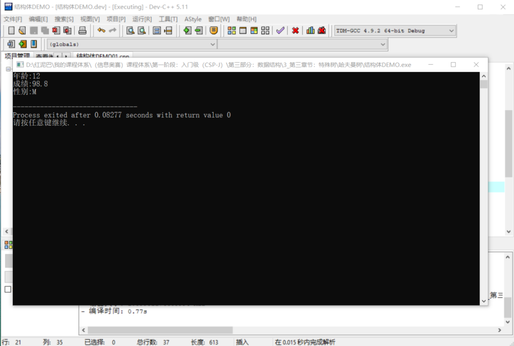
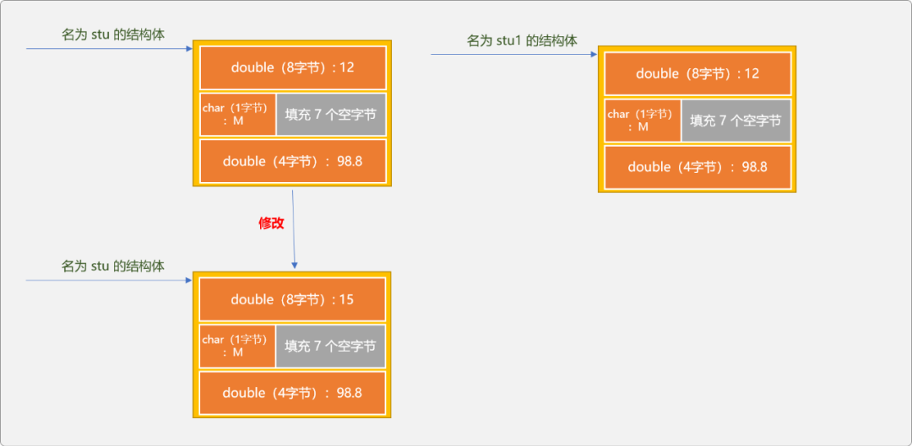
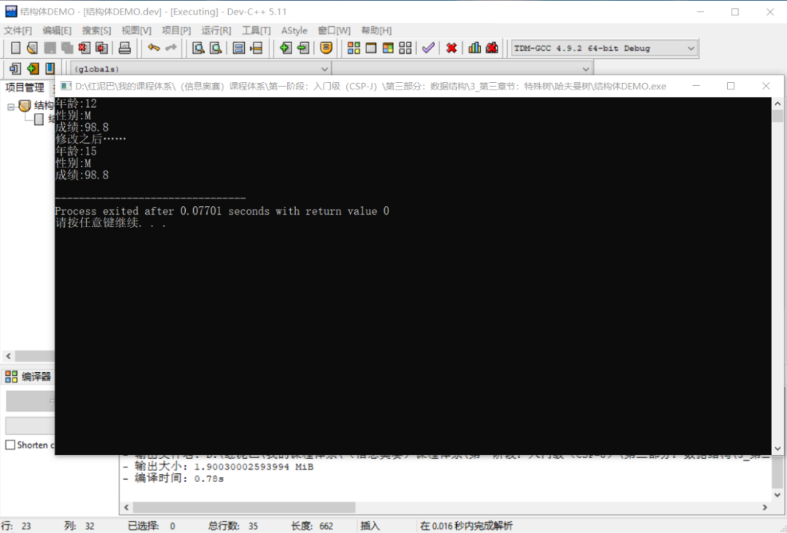
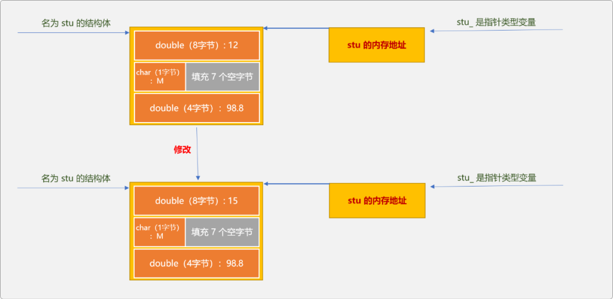
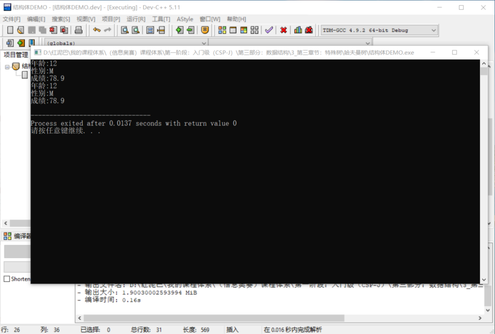
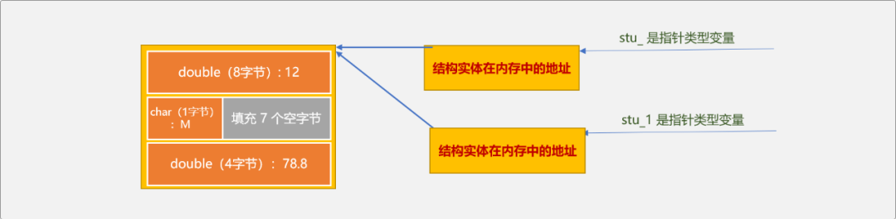
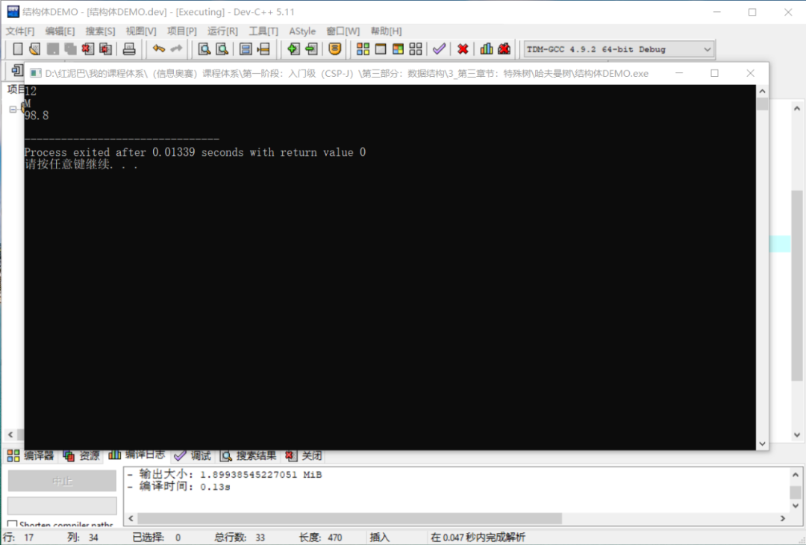
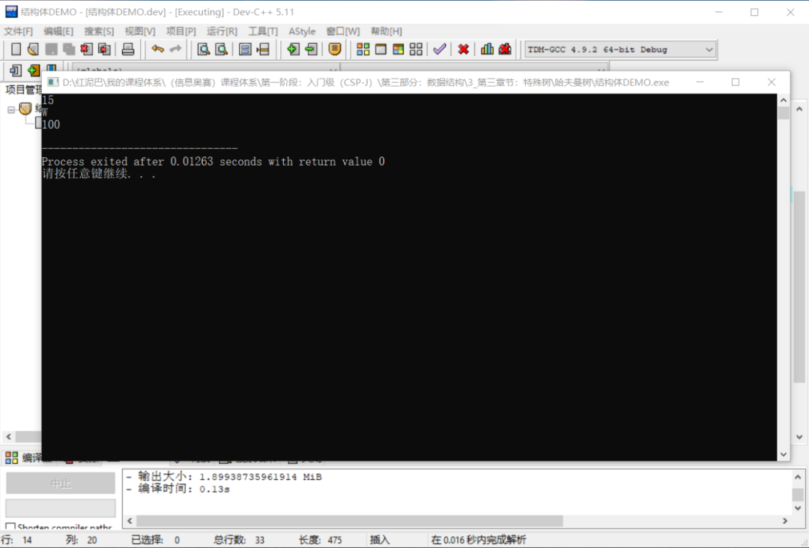
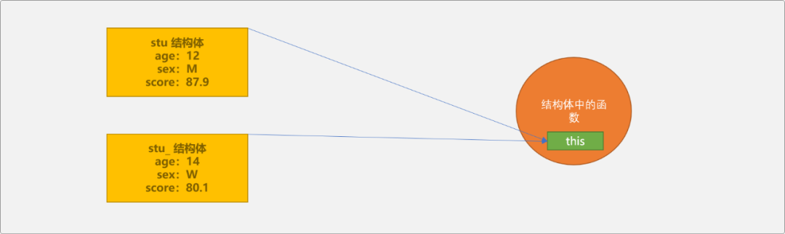

C++ 炼气期之结构体
1. 前言
计算机早期以数值计算为主，强调的是计算。
随着计算机向着不同领域的延伸，数据的概念已经不仅局限于数值型数据，计算机需要处理大量的非数值类型数据。如在企业级程序的开发过程中所涉及到的工作流信息，几乎都是非数值型数据。
为了能抽象地描述这些非数值类型的数据，C++引入了复合数据类型的概念。
C++数据类型分基本（原生）数据类型和复合数据类型，结构体就是一种复合数据类型。可认为复合数据类型是通过组合基本数据类型得到的一种新类型，新类型用来描述问题域中的特定数据。
本文所用到的分量一词指的是复合数据类型中的某一个子类型。
2. 结构体
现有一个开发学生管理系统的需求，系统需要一个学生信息管理模块，包含添加、删除、更新……学生信息功能。解决这个问题之前，则需要考虑如何存储学生的个人信息以及一个学校的所有学生信息。
学生的个人信息包含学生的年龄、性别、成绩……
如果仅存储一个学生信息，这个问题很好解决，定义 3 个变量即可。
如果需要存储全校学生信息，可以考虑使用数组，因受限于数组只能存储同类型数据的特点。为了完成这个需求，则需要 3 个数组，一个用来存储年龄、一个用来存储性别一个用来存储成绩。显然，在编码时，需要随时随地同步 3 个数组，稍有不慎，便会出现错误。
此时，可能会有一个想法，能不能创建一个学生类型，然后使用一个数组保存，数组中不再存储基本数据类型，而是一种新的学生类型，如同二维数组一样，一维数组中存储一维数组，且不是一件很开心的事情 。
于是诞生出了一种设计理念：组合基本类型，设计出一种新的数据类型。可以理解为结构体是一个打包的数据类型,里面可以存放多个数据
复合的方式有很多种，结构体仅是其中之一。
2.1 结构体语法
结构体是一种数据类型，使用语法和基本类型一样。
一旦在语法上承认了这种数据类型，和其它类型的区别就在于编译器为之所分配的内存大小。
结构体和数组类似。创建数组和结构体时，都是开辟了一个连续区域， 这个连续区域是多个变量的集合。数组这个连续区域只能保存类型相同的数据，结构体这个连续区域则可以存储不同类型的数据。
也就是说，在定义结构体之后，C++运行时系统为之分配的是一个连续区域。那么这个区域有多大？是不是由组成此结构体的子数据类型的大小之和？
下面来求证一下。
首先使用c++的sizeof函数计算一下结构体的大小：
int main(int argc, char** argv) {
//创建结构体类型变量
Student stu;
//计算结构体的大小
int size= sizeof(stu);
cout<<size<<endl;
return 0;
}
输出结果：12。也就是说在使用此结构体时，运行时系统分配的空间是12。
Student结构体由一个int、一个char、一个float复合而成。理论上所需要的存储空间大小应该是4+1+4=9。
int是 4 字节
char是1字节
float是4字节
通过对比，可以推翻前面的结论：运行时系统为结构体所分配的内存空间大小并不一定是构建这个结构体的所有子数据类型的大小之和。
原因何在？
这是因为内存对齐的缘故，内存对齐并不是本文的主题。这里只粗略说一下，运行时为结构体分配内存时，并不是我们所想象的简单地按顺序依次分配，实际上是为了提高内存的访问速度，以首地址为起始点，后续的内存空间地址尽可能是首地址的倍数。
如上图所示，在为char类型的变量分配空间时，为了保证访问float时的地址能被 4 整除，会为 char类型变量填充 3 个空字节，导致结构体最后被分配到的空间是 12。
如下结构体类型：
在内存中占用 24个字节，原由和上述是一样的。
对结构体有了一个大致了解后，再看一下使用结构体的 2 种语法结构：
- 静态声明。
- 动态声明。
2 种语法结构的区别在于数据存储的位置有差异性。当然，从字面意思而言，动态创建更有灵活性，事实也是如此。
2.2 静态声明
静态声明的特点：数据存储在栈中，变量中保存的是结构体本身。
如下代码：
#include <iostream>
using namespace std;
//学生结构体
struct Student {
//年龄
double age;
//性别
char sex;
//成绩
double score;
};
int main(int argc, char** argv) {
//静态声明
Student stu;
return 0;
}
和使用其它的变量一样，声明后需要给结构体初始化数据，常用初始化方式有 3 种：
- 使用
{}进行初始化，{}称为列表初始化。优点是，一次到位，简洁明了。
- 使用
.运算符访问结构体的各个分量，对结构体进行初始化和使用。
数组是同类型变量的集合，数组会为每一个存储单元指定一个唯一编号 。结构中的类型差异性很大，编号策略并不合适。但
.运算符本质和编号是一样，都是通过移动指针来寻找变量。
给结构体赋值后，方能使用结构体中保存的数据，可以使用.运算符使用结构体中的每一个分量。
- 使用另一个结构体中的数据。静态声明的结构体之间，采用的是
值复制策略，即把一个结构体中的值赋值给另一个结构体。
//原结构体
Student stu;
stu.age=12;
stu.score=98.8;
stu.sex='M';
//通过静态创建的结构体之间可以直接赋值
Student stu1=stu;
cout<<"年龄:"<<stu1.age<<endl;
cout<<"成绩:"<<stu1.score<<endl;
cout<<"性别:"<<stu1.sex<<endl;
//输出结果
//年龄：12
//成绩：98.8
//性别：M
这里做一个测试，如果更改第一个结构体中某个分量的值，是否会影响第二个结构体中同名分量的值。
Student stu1=stu;
//修改 stu 结构体中的年龄信息
stu.age=15;
//输出 stu1 中的数据
cout<<"年龄:"<<stu1.age<<endl;
cout<<"成绩:"<<stu1.score<<endl;
cout<<"性别:"<<stu1.sex<<endl;
输出结果：

答案是不会，因为 2 个结构体有各自独立的内存区域，一旦完成最初的赋值之后，2 者之间就没有多大联系了。如下图，修改 stu的数据，不可能影响到 stu1的数据。

2.3 动态声明
动态创建的结构体的特点：数据存储在堆中，结构体变量存储的是结构体在内存中的地址。如下语句：
new运算符会在堆中为结构体开辟一个内存区域，并且返回此内存区域的首地址，然后保存在 stu_指针变量中。所以 stu_变量存储的是指针类型数据，可以随时更改所指向的结构体实体。
- 初始化结构体：动态声明的结构体可以使用
->运算符(指针引用运算符)为结构体中的每一个分量赋值，也可以使用.运算符访问结构体中的分量。
//初始化结构体
stu_->age=13;
stu_->sex='W';
stu_->score=99.7;
//使用结构体中的数据
cout<<"年龄:"<<stu_->age<<endl;
cout<<"成绩:"<<stu_->score<<endl;
cout<<"性别:"<<stu_->sex<<endl;
//也可以使用 . 运算符访问动态结构体中的数据。
cout<<"年龄:"<<(* stu_).age<<endl;
cout<<"成绩:"<<(* stu_).score<<endl;
cout<<"性别:"<<(* stu_).sex<<endl;
- 使用另一个静态结构体中的数据。
因为动态声明的结构体变量保存的是地址，需要使用 &取地址运算符，才能把静态结构体的地址赋值给动态声明的结构体类型变量。
//静态声明结构体
Student stu;
stu.age=12;
stu.score=98.8;
stu.sex='M';
//把静态结构体的地址赋值给结构体指针变量
Student * stu_=&stu;
cout<<"年龄:"<<stu_->age<<endl;
cout<<"性别:"<<stu_->sex<<endl;
cout<<"成绩:"<<stu_->score<<endl;
如果修改静态结构体中分量的值，动态引用会不会受影响？如下测试一下，便可知答案是会。
Student stu;
stu.age=12;
stu.score=98.8;
stu.sex='M';
Student * stu_=&stu;
cout<<"年龄:"<<stu_->age<<endl;
cout<<"性别:"<<stu_->sex<<endl;
cout<<"成绩:"<<stu_->score<<endl;
//修改静态结构体中的年龄
stu.age=15;
cout<<"修改之后……"<<endl;
cout<<"年龄:"<<stu_->age<<endl;
cout<<"性别:"<<stu_->sex<<endl;
cout<<"成绩:"<<stu_->score<<endl;
输出结果：

为什么？
其实 stu是才是真正的结构体实体，存储了结构体的所有分量数据。而stu_是指针实体，存储的是真正结构体所在的地址。也就是使用 stu和stu_访问的是同一个结构体内存空间。
结构体实体只有一个，结构体变量名和结构体指针只是
2种不同的访问入口。

- 使用另一个动态声明的结构体中的数据。因为动态声明结构体的变量都是指针类型，直接赋值即可。
Student * stu_=new Student();
stu_->age=12;
stu_->sex='M';
stu_->score=78.9;
cout<<"年龄:"<<stu_->age<<endl;
cout<<"性别:"<<stu_->sex<<endl;
cout<<"成绩:"<<stu_->score<<endl;
//直接赋值
Student * stu_1=stu_;
cout<<"年龄:"<<stu_1->age<<endl;
cout<<"性别:"<<stu_1->sex<<endl;
cout<<"成绩:"<<stu_1->score<<endl;
输出结果：

此种方案和上面的引用静态结构体的方案本质是一样的，真正的结构体实体只有一个，但有 2 个结构体指针变量引用此结构体。无论使用哪一个结构体指针变量修改结构体，都是可以的。

3. 结构体和函数
结构体可以作为函数的参数类型，也可以作为函数的返回类型。
作为函数的参数：
#include <iostream>
using namespace std;
//结构体
struct Student {
double age;
char sex;
double score;
};
void updateStudent(Student stu){
stu.age=15;
stu.sex='W';
stu.score=100;
}
int main(int argc, char** argv) {
//结构体
Student stu;
//初始化
stu.age=12;
stu.sex='M';
stu.score=98.8;
//调用函数修改
updateStudent(stu);
//输出
cout<<stu.age<<endl;
cout<<stu.sex<<endl;
cout<<stu.score<<endl;
return 0;
}
输出结果：

如上代码，试图通过调用函数修改原结构体中的数据信息，结论是修改不了的。main函数中调用updateStudent函数时，是把主函数中结构体中的值复制给updateStudent函数的结构体参数。默认情况下，以结构体作参数，采用的是值传递。
只有当形式参数的类型是指针或引用时，才可以影响主函数中的结构体中的数据。
//结构体指针作为参数
void updateStudent(Student *stu){
stu->age=15;
stu->sex='W';
stu->score=100;
}
//结构体引用
void updateStudent_(Student & stu){
stu.age=15;
stu.sex='W';
stu.score=100;
}
int main(int argc, char** argv) {
//结构体
Student stu;
//初始化
stu.age=12;
stu.sex='M';
stu.score=98.8;
//调用 updateStudent_(stu) 能达到相同效果
updateStudent(&stu);
//输出
cout<<stu.age<<endl;
cout<<stu.sex<<endl;
cout<<stu.score<<endl;
return 0;
}

结构体作为函数的返回值。
- 返回静态结构体，如下代码，本质是把
createStudent函数中创建的结构中的数据复制给主函数中名为stu的结构体。函数调用完毕后，createStudent函数中的结构体所使用的内存空间会被自动回收。
Student createStudent() {
//结构体
Student stu;
//初始化
stu.age=12;
stu.sex='M';
stu.score=98.8;
return stu;
}
int main(int argc, char** argv) {
Student stu=createStudent();
cout<<stu.age<<endl;
cout<<stu.score<<endl;
cout<<stu.sex<<endl;
return 0;
}
- 返回结构体指针。
注意，返回结构体指针时，不能是指向局部变量的指针。
Student stu;
Student * createStudent() {
//初始化
stu.age=12;
stu.sex='M';
stu.score=98.8;
return &stu;
}
int main(int argc, char** argv) {
Student *stu=createStudent();
cout<<stu->age<<endl;
cout<<stu->score<<endl;
cout<<stu->sex<<endl;
return 0;
}
- 返回结构体引用，不能返回局部变量的引用。因为局部变量在函数调用结束后就会被回收，返回的引用就没有任何意义可言。
Student stu;
Student & createStudent() {
//初始化
stu.age=12;
stu.sex='M';
stu.score=98.8;
return stu;
}
int main(int argc, char** argv) {
Student stu=createStudent();
cout<<stu.age<<endl;
cout<<stu.score<<endl;
cout<<stu.sex<<endl;
return 0;
}
4. 再论结构体
一旦确定一种数据类型后，同时也确定了在此数据类型上所能做的操作。结构体类型是由开发者遵循语法规则自定义的一种新数据类型，对于这种数据类型的内置操作也只能由开发者自己决定。
结构体中除了可以指定组合了哪几种子数据类型，还可以提供相应的函数。
#include <iostream>
using namespace std;
//结构体
struct Student {
double age;
char sex;
double score;
//初始化函数，此函数没有返回类型说明
Student(double age, char sex,double score) {
this->age=age;
this->sex=sex;
this->score=score;
}
//自我显示函数
void showSelf() {
cout<<"年龄:"<<this->age<<endl;
cout<<"性别:"<<this->sex<<endl;
cout<<"成绩:"<<this->score<<endl;
}
//其它函数……
};
int main(int argc, char** argv) {
//调用初始化函数
Student stu(12,'M',87.9);
stu.showSelf();
Student stu_(14,'W',80.1);
stu_.showSelf();
return 0;
}
上述代码中出现了一个this关键字，此关键字的含义是什么？
this是结构体函数的隐式变量，用来存储已经分配了内存空间的结构体实体。因为无论创建多少个结构体，结构体中的函数代码都只有一份，保存在代码区。当某个结构体需要调用函数时，则需要把自己的地址传递给这个函数，以便让此函数知道处理的数据源头。

如上图示，如果 this中保存的是 stu的地址，，函数会处理 stu的数据。如果this中保存的是 stu_的地址，函数会处理 stu_的数据。
5. 总结
结构体虽然是C++中最基础的知识，但是，只有熟练掌握后，才能构建起宠大的体系。